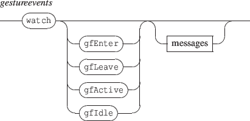
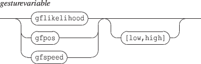

Next: 14.5 Gesture Follower Appearance
Up: 14. Gesture Follower
Previous: 14.3 Gestures management
Contents
Index
14.4 Events and interaction
Events are defined at gesture level and events management messages should be addressed to gestures.

- gfEnter triggered when the gesture state changes from idle to active.
- gfLeave triggered when the gesture state changes from active to idle.
- gfActive triggered in active state each time the gesture likelihood is refreshed.
- gfIdle triggered in idle state each time the gesture likelihood is refreshed.
A message associated to a gesture supports the following specific variables:

These variables support the scaling feature associated to position variables and described in section 13.2.1 p.![[*]](crossref.png) .
.
- gflikelihood indicates the current likelihood
- gfpos indicates the current position in the gesture
- gfspeed indicates the current gesture execution speed
NOTE
Variables described in section 13.2 p. may also be used but they are meaningless and contains default values.
Next: 14.5 Gesture Follower Appearance
Up: 14. Gesture Follower
Previous: 14.3 Gestures management
Contents
Index
Grame - INScore project